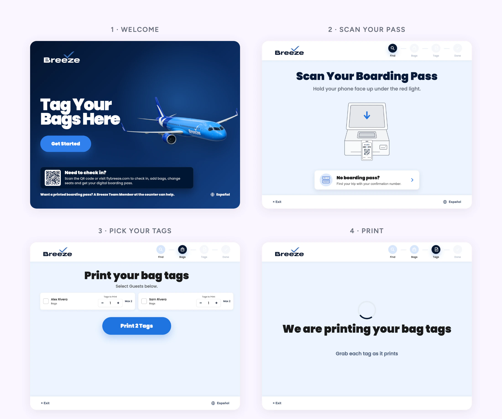
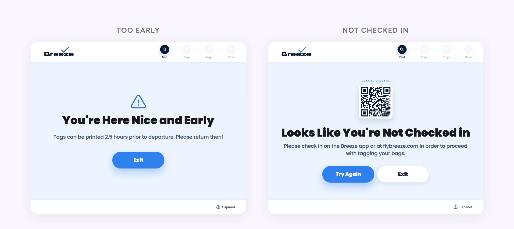
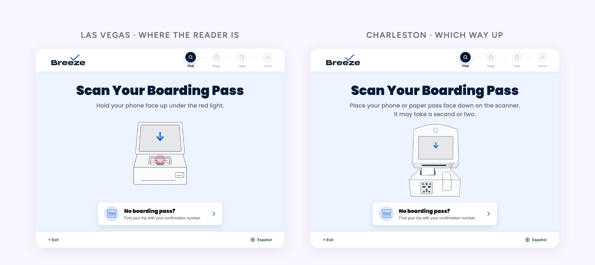

Breeze's First Airport Kiosk, and What It Actually Does
A new self-service channel on hardware we don't own
Executive Summary
In July 2026 Breeze went live on shared, airport-owned kiosks for the first time, in Las Vegas. Charleston followed in August. I own the live screens: the errors, the copy in English and Spanish, and the scan animation.
I also went to the airport and timed it. The kiosk proved the technology. It didn't prove the business case yet, and the field research is what told us how to fix the scope.
Role:
Product Designer, Field Researcher
Duration:
July to September 2026
Responsibilities:
Field research, UX/UI, bilingual copy, live CMS changes
The Setup
Somebody Else's Machine
Common-use kiosks belong to the airport. A vendor runs the software, and we edit our screens through their CMS. There's no release cycle, so a change reaches Guests the same day. So does a mistake.
Version one did one thing: print bag tags for Guests who had already checked in.

Going to the Airport
Timing It on the Floor
Three days after launch I spent a day in the Las Vegas lobby with a stopwatch: 45 timed transactions plus twelve observation notes, counter only against kiosk then counter. A second floor day in August added three observers and 51 full journeys.
| Measure | Counter only | With the kiosk |
|---|---|---|
| Agent's time | 1:49 | 1:08 |
| Guest's whole journey | 1:49 | 1:52 |
The Saving Landed on the Agent, Not the Guest
A kiosk Guest prints a tag and then still lines up for an agent to take the bag. Of the ten steps in a counter transaction, the kiosk took one, printing the tag, and it's the cheapest one. For the Guest, the whole trip took about the same time.
Guests liked it anyway.
I love these, this saved so much time.
That's real value, and it isn't a time saving. Self-service feels faster than standing in line. I kept the two claims apart.
What I Would and Wouldn't Claim
| Claim | Call | Why |
|---|---|---|
| Saves agent time | Yes, up to 0:42 | An upper bound. Kiosk Guests were already checked in and likely had bags paid for, so the gap isn't all the kiosk |
| Saves Guests time | No | 1:52 against 1:49. A wash for success, worse for anyone who failed at the kiosk and lined up twice |
| Makes the lobby predictable | Dropped | Too few observations to call it a rate |
The biggest failure was Guests who hadn't checked in, which v1 couldn't fix. Product and I wrote the trial read together, and the fix was a scope change, not a rebuild: a QR code on the kiosk that sends Guests to check in on their own phone. That took check-in off the agent's clock without building check-in on the kiosk. It's been live since July 30.
Fixing the Live Screens
Errors That Tell You What to Do Next
I mapped every error the kiosk could actually fire and cut the set to the 16 a Guest can reach. Each one got a redesign and copy that names the next step. A language pass fixed 54 Spanish strings: machine translation errors, formal and informal drift, and text that was never translated.

Teaching a Gesture the Machine Can Actually Do
Scan is where Guests stalled. The old screen showed a phone held up to a reader the Las Vegas machine doesn't have. People did what it said, nothing happened, and they gave up and joined the counter line.
I modeled a new animation on the real unit, where the reader hides under the screen. Then Charleston launched on different hardware, a flat bed you look straight down on. I'd recommended one animation for both. Side by side, that would have taught half our Guests the wrong move, so I reversed myself and drew Charleston its own.

Hold your phone face up under the red light.
Place your phone or paper pass face down on the scanner. It may take a second or two.
I built both as code-drawn SVG, with AI helping me write it, and moved them into the CMS media library. That turned a second station's art into an upload instead of a vendor template change.
On the floor in Las Vegas, scan confusion dropped and nobody pressed their phone flat against the screen anymore. That's observed, not timed. Nobody has clocked a scan before and after yet.
Where It Stands
- Live on 8 units in Las Vegas and in Charleston since August 26
- The on-screen QR is live. A printed lobby sign is waiting on airport approval
- Las Vegas is close to a best case for counter layout, so the next city will likely have less margin than these numbers suggest
The question for the next stage is the same one the floor day asked: how many agent minutes does this take off a Guest? That number decides whether the program grows.